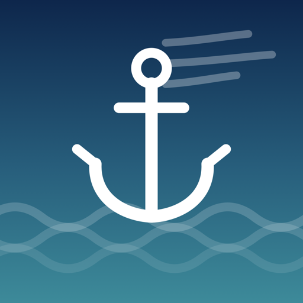
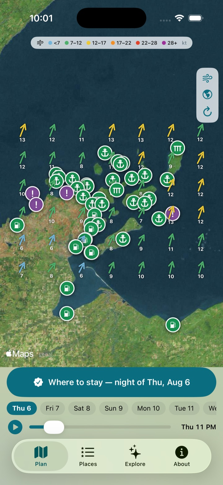
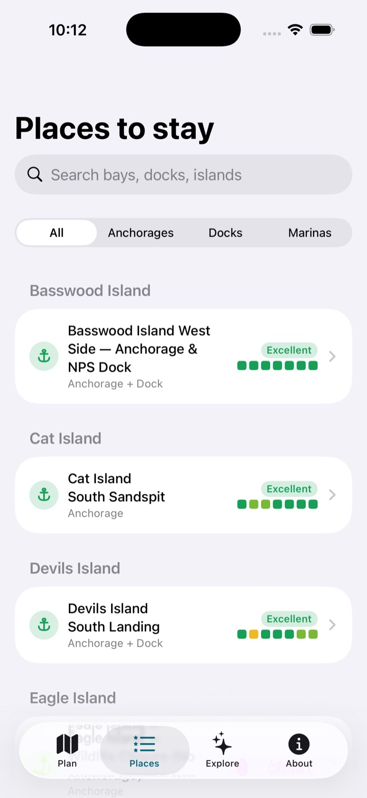
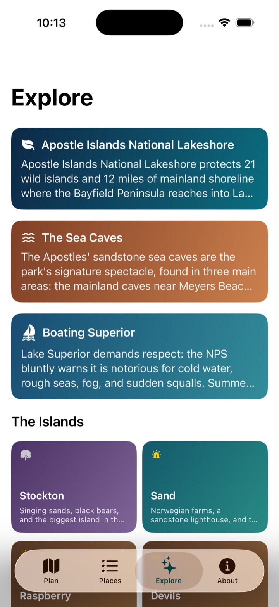

Know where to drop the hook before the wind makes the call for you.
View on GitHub How it works
Apostle Anchor is an iOS app for cruising Apostle Islands National Lakeshore — 21 islands on Lake Superior where the evening's big question is always the same: given the forecast, where do we stay tonight?
Every place carries a 16-direction shelter fingerprint and wave-fetch map built from its actual geography — bluffs, sandspits, breakwalls, and the islands that block a sea from building.
Hourly wind and gust forecasts are scored against each profile, weighting the hours you actually swing at anchor and grading every night from Excellent to Avoid.
Strong wind onto an exposed shore caps the score no matter how nice the beach is. Superior forgives many things; a lee shore isn't one of them.
Night-by-night squares project a week out with a “good for N nights” badge — so a one-night wonder and a stay-all-week harbor are easy to tell apart.
A live wind-field map with a play-through time scrubber, ranked picks for any night, rich detail pages with protection roses and gust charts, marine alerts from NOAA — plus island stories, lighthouses, shipwrecks, and singing sands for the days you're not going anywhere.


44 documented places — no invented pins on random coastline. Compiled from NPS boating guidance, marina listings, NOAA Coast Pilot, and published Lake Superior cruising references, then adversarially verified for existence, coordinates, and shelter geometry. Purple advisory entries are closures and day-stop-only areas the app will never recommend for the night.